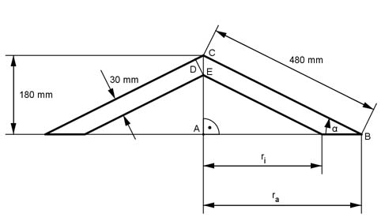
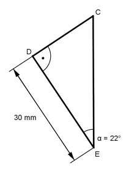

Aufgabe 247 Wie schwer ist der dargestellte Kegel aus Beton mit einer Dichte von 2,2 g/cm³?  Satz von Pythagoras im Dreieck ABC: BC² = ra² + AC² |-AC² ra>² = BC² - AC² ra>² = 480² mm² - 180² mm² = 198 000 mm² |√ ra> = 445 mm AC 180 mm sin α = ----- = ---------- = 0,375 --> α = 22° BC 480 mm Dreieck DEC vergrößert:  30 mm cos α = ------- |*EC EC cos α * EC = 30 mm |:cos α 30 mm 30 mm EC = -------- = -------- = 32,36 mm cos α 0,9272 AC - EC = AE = Höhe des inneren Kegels = = 180 mm - 32,36 mm = 147,64 mm AE tan α = ---- |*ri ri ri * tan α = AE |:tan α AE 147,64 mm ri = ------- = ------------ = 365,45 mm tan α 0,404 л * ra² * AC л * ri² * AE V = --------------- - -------------- 3 3 л * 445² mm² * 180 mm л * 365,45² mm² * 147,64 mm V = -------------------------- - ------------------------------- 3 3 V = 37 307 910 mm³ - 20 638 936 mm³ = 16 668 974 mm³ = = 16,669 dm³ 2,2 g/cm³ = 2,2 kg/dm³ m = V * 2,2 kg/dm³ = 16,669 dm³ * 2,2 kg/dm³ = 36,7 kg